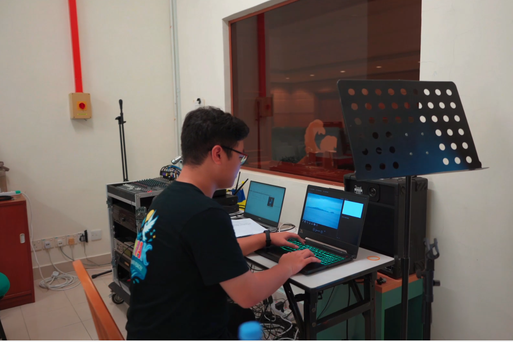

← Back to Portfolio
Multimedia Production Breakdown
An extensive exploration into live audio signal management, hardware staging setups, and digital post-production timelines.

Production Methodology
This project showcases full execution capability regarding real-world studio recording and engineering setups. By balancing real-time acoustic management criteria on field sets with fast post-production software compilation workflows, the final outputs are structurally balanced and fully optimized for digital asset deployment platforms.
Technical Operation Competencies
- Live Audio PA Systems Engineering: Managed sound console decibel tracking matrices, routing clean signal balances across amplifiers to prevent frequency feedback clipping.
- Studio Field Shooting Layouts: Implemented hardware placements involving steady camera frames, manual focus control tracking, and balanced studio script positions.
- Dynamic Timeline Synchronization: Handled audio track beat-mapping and clip clipping boundaries across video assets to ensure sound changes hit right on specific frame changes.
- Post-Production Software Compilation: Applied keyframe scaling parameters, color balancing configurations, and format delivery standards inside CapCut and Filmora.